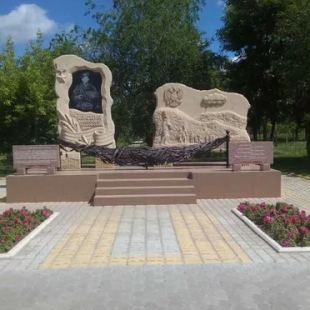

Памятник А. М. Колгатину
Памятник Герою России Александру Колгатину, уроженцу Камышина открыт 16 июля 2015 года. Александр Михайлович - командир инженерно-саперного взвода 104-го гвардейского парашютно-десантного полка 76-й гвардейской Черниговской Краснознамённой воздушно-десантной дивизии. С 3 февраля 2000 года выполнял задачи в ходе проведения контртеррористической операции в Северо-Кавказском регионе. Совершил более двадцати выходов со взводом для разминирования объектов в Веденском районе Чеченско. 29 февраля 2000 года выдвигался в составе 6-й парашютно-десантной роты для занятия господствующих высот. Приняв бой, учитывая невозможность установки мин под шквальным огнем противника, гвардии старший лейтенант Колгатин занял место в боевом порядке роты. Показал личный пример мужества и героизма, ведя огонь из стрелкового оружия, четко руководил подчиненными. На рассвете 1 марта заметив, что боевики сосредотачиваются с северного направления, принял решение воспретить их проход. Под огнем боевиков установил две мины МОН-50. Когда бандиты ринулись в атаку, смертельно раненый в грудь Александр привел мины в действие. От мощных взрывов погибли 11 бандитов и более десятка были ранены.